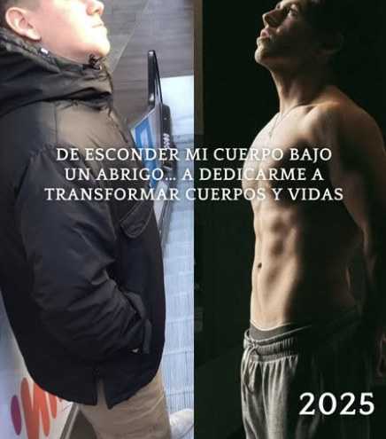
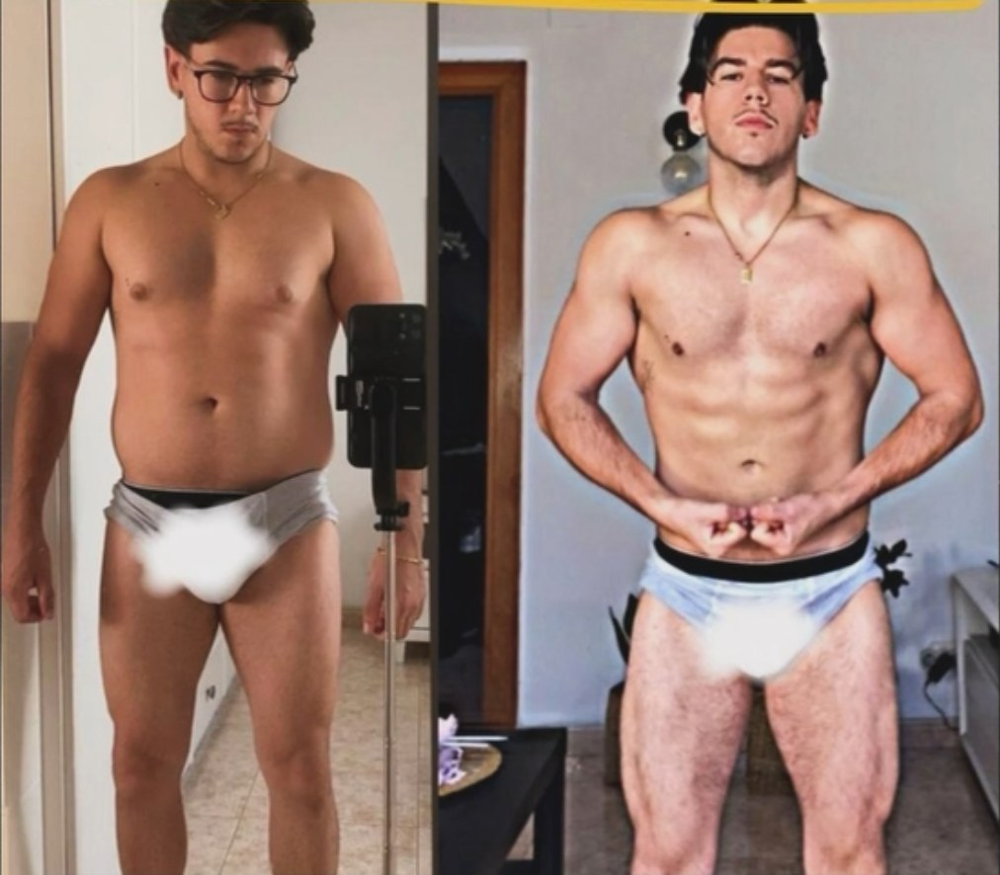
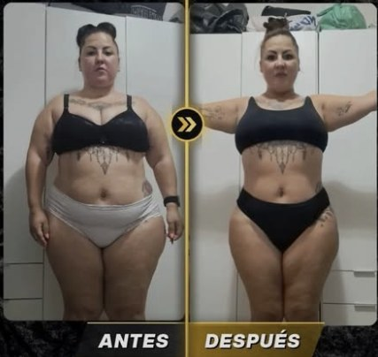

Ordenar
Tu comida de siempre, con orden y cantidades. 3 entrenos de 30 minutos metidos en tu agenda real.
Con 30 minutos al día, comiendo lo que te gusta y con alguien que no te suelta. Yo hice la dieta extrema: con 17 años pesaba 88 kg y bajé a 57 pasando hambre y con atracones. Por eso trabajo justo al revés.
Lo leo yo personalmente. Si encajamos, hablamos 30 minutos y te digo qué haría en tu caso.
No te falta voluntad. Te sobran dietas de hambre y te falta un plan que quepa en tu día.

1,70 m y 88 kg. No iba a la playa, la ropa no me quedaba y un día no me pude comprar una camiseta que me gustaba. Mi primer día de gimnasio fui con mi padre y solo me atreví con la máquina de cardio.
Rutinas de redes, siete días a la semana, mucho cardio y comer siempre lo mismo, y poco. Bajé a 57 kg en menos de un año. Cada vez que comía algo que me gustaba, me daba un atracón.
Aprendí a entrenar con estructura, a descansar y a comer con sentido. Y aprendí lo más importante: tras 3 meses sin una comida libre, en Navidad lo tiré todo. Prohibir no funciona.
Mi primer verano sin camiseta ni me lo creía. Hoy preparo mi primera competición y acompaño a gente que trabaja todo el día a perder grasa sin pasar por lo que pasé yo.
"Las cosas fáciles nunca llegan. Pero no hace falta pasar hambre."
Perder la grasa es la mitad. La otra mitad es no volver a cogerla. Por eso el método tiene una fase que casi nadie vende.
Hombres y mujeres de más de 30 que trabajan 8–12 horas al día y quieren perder grasa, sobre todo del abdomen, sin dietas de hambre ni vivir en el gimnasio.
Qué pasa: Comes lo que ya te gusta, pero con orden, y tus 3 entrenos entran en la agenda. Se acaban las excusas, no la comida.
Qué haces tú: 3 entrenos de 30 minutos, proteína en cada comida, tu comida libre y la revisión del domingo.
Qué pasa: Bajas grasa sin pasar hambre. El abdomen y la ropa lo notan antes que la báscula.
Qué haces tú: Subes cargas, ajustamos cantidades cada semana y mides cintura y fotos.
Qué pasa: Aprendes a mantenerlo en Navidad, en vacaciones y en semanas de 12 horas, para no volver atrás.
Qué haces tú: Comes más flexible, entrenas igual y te quedas con tu propio sistema.
Por qué: Prohibir lleva al atracón. Yo estuve 3 meses sin ninguna y lo pagué en Navidad.
Por qué: Lo que está en el calendario se hace, y la pierna es lo que más gasta. Yo me la saltaba.
Por qué: «Me veo mejor pero mi peso no baja»: la báscula sola engaña; la cintura y las fotos, no.
Prueba: «Con 17 años pesaba 88 kg y llevaba chaqueta en pleno verano. No pude comprarme una camiseta que me gustaba. Hoy ayudo a gente que trabaja todo el día a perder grasa sin pasar hambre.»
Lo primero que vas a dejar de hacer es ponerte tantas excusas. Se puede con 30 minutos y comiendo lo que te gusta.
Tu comida de siempre, con orden y cantidades. 3 entrenos de 30 minutos metidos en tu agenda real.
Bajas grasa sin pasar hambre. Lo nota tu cintura y tu ropa antes que la báscula.
Navidad, vacaciones, semanas de 12 horas: aprendes a mantenerlo para no volver atrás.


Me cuentas tu caso: edad, horario, qué has probado y qué quieres conseguir. Dos minutos.
Si encajamos, una llamada de 30 minutos en la que te digo qué haría contigo.
Tu plan de comida y tus 3 entrenos en tu agenda, y la primera revisión en el calendario.
¿Prefieres Instagram? Escríbeme PLAZA por privado a @alvaro.yebenezfit y te contesto yo.
Son 3 entrenos de 30 minutos, en el gimnasio o en casa, encajados en tu horario real. Yo entrenaba los siete días y estaba peor: más no es mejor, mejor es lo que cumples.
No. No hay alimentos prohibidos: hay cantidades y orden, y una comida libre planificada cada semana. Yo pasé hambre para bajar de peso y acabé con atracones. No te lo voy a pedir.
No hace falta: comes lo mismo que tu familia, con otro reparto en el plato. Y si no puedes ir al gimnasio, entrenas en casa.
Los clientes con los que mejor me sale tienen más de 40. Yo ya hice la dieta extrema y sé dónde acaba; por eso trabajo con lo que tú puedes sostener, a tu ritmo y con tu cuerpo.
Pasa mucho, sobre todo al principio. Por eso cada semana revisamos fotos y cintura, no solo el peso. Si la cintura baja, estás perdiendo grasa.
A mí también: el primer día solo me atreví con la cinta. Puedes empezar en casa y, cuando vayas, irás con tu plan y sabiendo exactamente qué hacer.
Adaptamos el plan a tu punto de partida. Si hay dolor o una lesión, primero tu médico o fisio: yo no diagnostico, adapto el entrenamiento a lo que te digan.
Depende de tu caso y de cuánto tiempo trabajemos juntos (mínimo un trimestre). Se puede fraccionar. Te lo explico en la llamada.